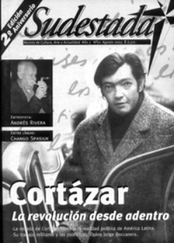

Buscar
Andrés Rivera: "Sólo me impulsó el placer redoblado de escribir"
Capaz de dibujar retazos de un oscuro pasado a partir de inolvidables relatos; conversar con Andrés Rivera con la excusa de la presentación de su novela Ese manco Paz, es una forma de acercarse a los bordes difusos de una historia marcada por las acciones de un puñado de hombres.
Edición N° 21
Agosto 2003
Revista bimensual
Comprar edición impresaSumario
- Julio Cortázar y su largo camino por la realidad de América Latina. Un sueño y dos orillas
- Dos largos años
- Andrés Rivera: "Sólo me impulsó el placer redoblado de escribir"
- Los límites en el cine independiente: Imágenes del subsuelo
- Weather Report, Jazz electro-spacial
Compartir Articulo
Detrás de una prosa única en la literatura argentina, detrás de la mano de esos hombres que eligió para narrar sus ficciones, detrás de un pasado militante cargado de vivencias y desengaños, detrás de cada respuesta corta y lapidaria, detrás del silencio, algo se asoma.
El escritor persiste en una búsqueda, en el camino que las palabras eligen para mostrar imágenes inequívocas de algo que no fue. Andrés Rivera intenta, sin decirlo, armar un rompecabezas imposible; y la vida de algunos hombre son piezas que no encajan nunca. Un personaje llamado José María Paz, con sus cientos de batallas y enemigos encima, es la herramienta que aprovecha el escritor para insistir en la tarea. Inserto en la vorágine de presentaciones y entrevistas, caminando por calles frías y porteñas que le parecen tan ajenas, sorprendido aún por la repercusión de su novela Ese manco Paz y esperándonos con "puntualidad bolchevique", Andrés Rivera conversó con Sudestada acerca de esa búsqueda y también a partir de un relato que parece cerrar un círculo en su obra. Enemigo de la Historia (así, con las mayúsculas de los manuales y los libros escolares), la voz de algunos nombres decisivos del pasado de un país se adivina en cada página...
¿Qué elementos de la vida de José Paz lo motivaron a escribir su última novela?
¿Por qué escribí Ese manco Paz? No hubo eso que William Faulkner llamó con propiedad "impulso interior". Esa suerte de compulsión que lleva a un narrador a contar una historia. Faulkner dijo en alguna oportunidad que escribió El sonido y la furia porque vio una bombacha de niña manchada con no sabía bien qué. Y eso disparó, tal vez, su mejor novela. En mí hubo impulso interior para escribir La revolución es un sueño eterno, para escribir El farmer, y las otras novelas y los mamotretos, y me deja muy satisfecho que no estén en las librerías porque son un horror. El precio, por ejemplo, mi primer novela que es de 1957 y no la tiene nadie, o casi nadie salvo yo.
Leí las memorias del general Paz a principios de los años '70, me dije que Paz escribía tan bien como Sarmiento, que era un Sarmiento con chaquetilla militar. Y eso fue todo. Hasta que el año pasado, en los cuadernos en los que escribo a mano, tracé la primera línea impulsado por nada, salvo por el placer de escribir. Y eso fue desde la primera línea hasta la última. Fue sólo mero placer, diría un placer redoblado, a diferencia de los otros títulos que me publicó Alfaguara.
Ese manco Paz no tiene relación alguna con el general José María Paz y lo que fue su vida, lo que relatan los historiadores, lo que él mismo escribió en sus memorias, lo que sus contemporáneos escribieron acerca de él; el elogio que le hizo Sarmiento; las esperanzas que depositó Sarmiento en él; nada de eso está en el libro. Salvo una frase de Sarmiento que me pareció espléndida, cuando afirmó que Paz tenía "la virtud de hacerse impopular". El Paz que aparece en la novela es un anciano, que está solo y que vive en una casa en Buenos Aires; de hecho en las vísperas de su muerte, fulminado por un derrame cerebral, y que recuerda.
Paz nació en Córdoba y habla de esa provincia y esa ciudad capital poblada de iglesias y de sacerdotes católicos, él mismo fue un estudiante de teología. Pero aquí no se trata de reivindicar a esa ciudad, pero esa ciudad también supo de Juan José Castelli, que ordenó el fusilamiento de Santiago de Liniers; supo de la Reforma Universitaria; y supo de los dos Cordobazos, y sabe hoy de su anomia. Si no la sabe, la vive.
Paz cita algunos otros nombres que figuran en la historia argentina: a Juan Manuel de Rosas; a Facundo Quiroga, el patrón de La Rioja; a Estanislao López, el patrón de Santa Fe. Estancieros ellos, ricos ellos. Paz murió pobre. Paz no tuvo un sólo centavo nunca, no robó nunca, no degolló nunca, no mandó torturar. No tuvo, como Rosas, algo que se llamó La Mazorca, primer grupo de tareas que conoció este país. Y habla una noche de 1854, consigo mismo. Eso es la novela.
Usted destaca a Paz como un táctico brillante dentro de la historia militar...
No utilizaría la palabra brillante, diría que fue el mejor táctico que nunca tuvo el ejército argentino. Hay que distinguir, en este caso, a dos ejércitos. Uno, el ejército que combatió contra el trono español a las órdenes de Belgrano, a las órdenes de José de San Martín. El otro, es el ejército de Julio A. Roca que diezma a los indios con el remington y la sífilis; es el mismo ejército que perpetra la masacre de los peones en la Patagonia y es el mismo ejército genocida que los argentinos conocieron a partir del 24 de marzo de 1976.
Paz perteneció a lo que se llamó el Ejército Libertador. Paz fue un republicano, cuando la mayoría de sus contemporáneos eran partidarios de la monarquía. Su familia fue republicana: Su madre, Tiburcia Haedo; y su padre, José Paz, cordobeses ellos, no es poca cosa. Quiero enfatizar esto: Paz fue un republicano conservador, como fue conservador Sarmiento.
Paz quiso para este país una granja norteamericana, ese era su modelo de país. Un mundo ordenado, trabajador, en progreso constante, bajo el imperio de la ley. Este país fue un país de grandes estancieros, lo sigue siendo; un país de caudillos montoneros, y esa palabra tiene resonancias que llegan hasta el día de hoy; paisanos que obedecían las órdenes del capataz de turno, carentes de cualquier tipo de conciencia, sólo la de la sumisión a las órdenes de ese capataz. Así nos ha ido. Así nos va...
(La nota completa en la edición gráfica de Sudestada Nº21)
Comentarios
Martín Latorraca, Hugo Montero, Ignacio Portela
Articulos más vistos


LIBRERÍA SUDESTADA

Colección infantil

Distribuidora de Libros

Suscripción

Sudestada en URUGUAY

Otros articulos de esta edición
 Nota de tapa
Nota de tapa
Julio Cortázar y su largo camino por la realidad de América Latina. Un sueño y dos orillas
Escritor de notable talento, muchas veces subestimado y criticado; Julio Cortázar asumió durante toda su vida un lugar en la ...
 El galpón del viejo Charly
El galpón del viejo Charly
Weather Report, Jazz electro-spacial
(Probablemente cuando salga esta nota a la calle esa hermosísima persona, llamada Carlitos Miles, esté cumpliendo dos años de vida ...
 Cinestada
Cinestada
Los límites en el cine independiente: Imágenes del subsuelo
Apartada de las exigencias morales y fílmicas impuestas por el cine industrial, una generación de directores independientes se propone una ...